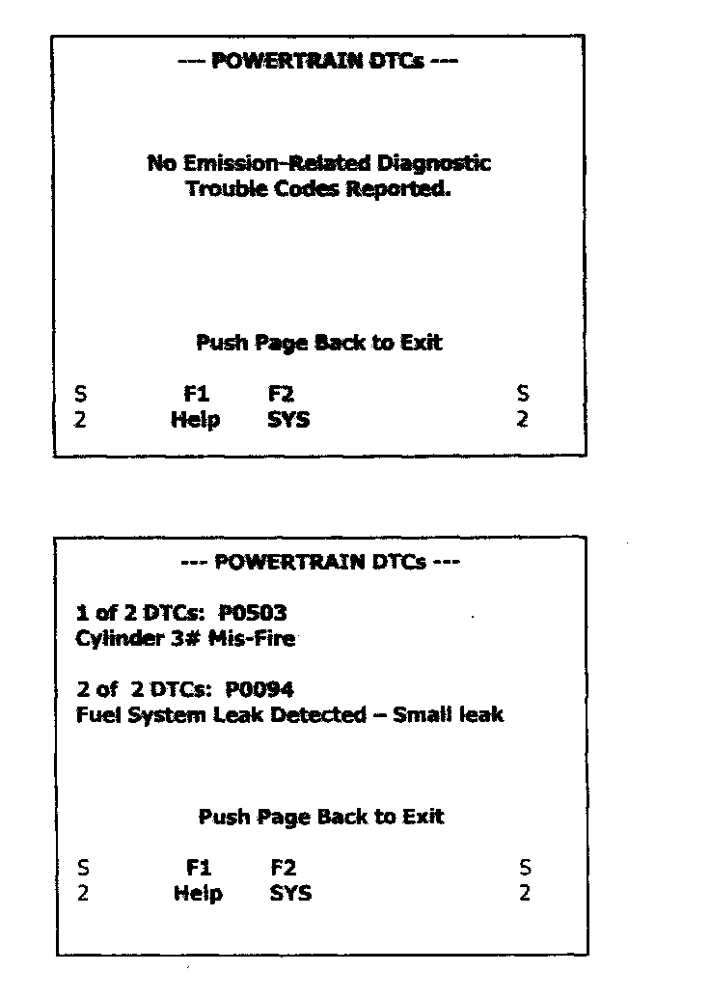

7. 1 Trip Failures

MODE 7 - Request Test Results for "Continuously" Monitored Systems
Functional Description - The purpose of this test mode is to obtain test status results for emission-related powertrain components/systems that are continuously monitored (Fuel System, Mis-Fire and comprehensive components) The intended use of this data is to assist the service technician after a vehicle repair, and after clearing diagnostic information, by reporting test results after a single driving cycle (1 Trip Failures). If the test failed during the driving cycle, the DTC associated with that test will be reported. Test results reported by this mode do not necessarily indicate a faulty component/system. If the test results indicate a failure after additional driving, then the MIL will be illuminated and a DTC will be set and reported with Mode 3 indicating a faulty component/system. Once Mode 3 indicates a faulty component/system, Mode 7 may or may not continue to report it as a one-trip failure also.
Test results for Mode 7 are reported in the same format and apply to the same classification of emission-related components/systems as the diagnostic trouble codes reported in Test Mode 3.